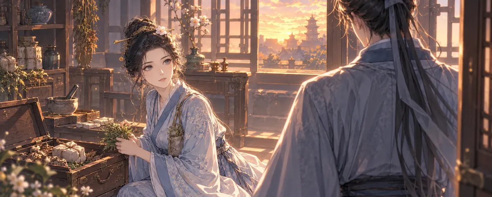

scene-v3_clinic
等待公司本机执行温芷 · 街市医馆
尚无本批新图；以下仅为已有参考，不能作为出图成功证明。
Claude #58 指定参考 · 非本批新图

输入固定为 Claude PR #58 的三条快照，执行范围以用户指定的第 0 批为准。此页不自动出图，也不代表 Claude 已评审。生成后同页会显示原图和真实裁切图。
尚无本批新图；以下仅为已有参考，不能作为出图成功证明。

尚无本批新图；以下仅为已有参考，不能作为出图成功证明。
尚无本批新图；以下仅为已有参考，不能作为出图成功证明。
候选包会在产生真实图片后提供。
原作图清单未改；候选图不会自动采用到正式游戏。评审通过前不执行下一批。